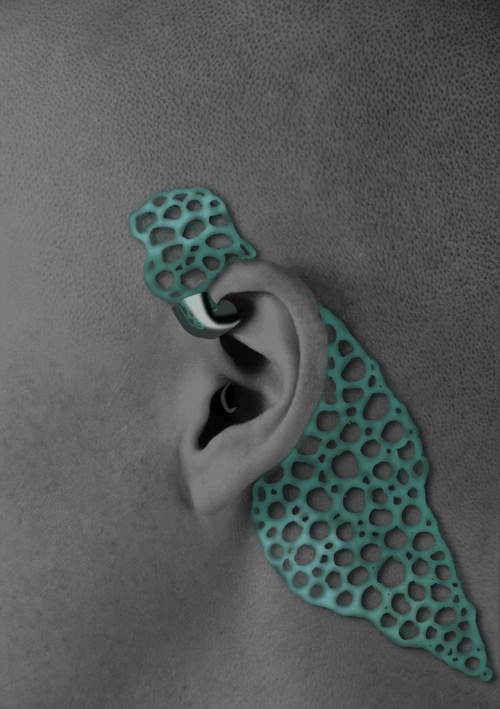
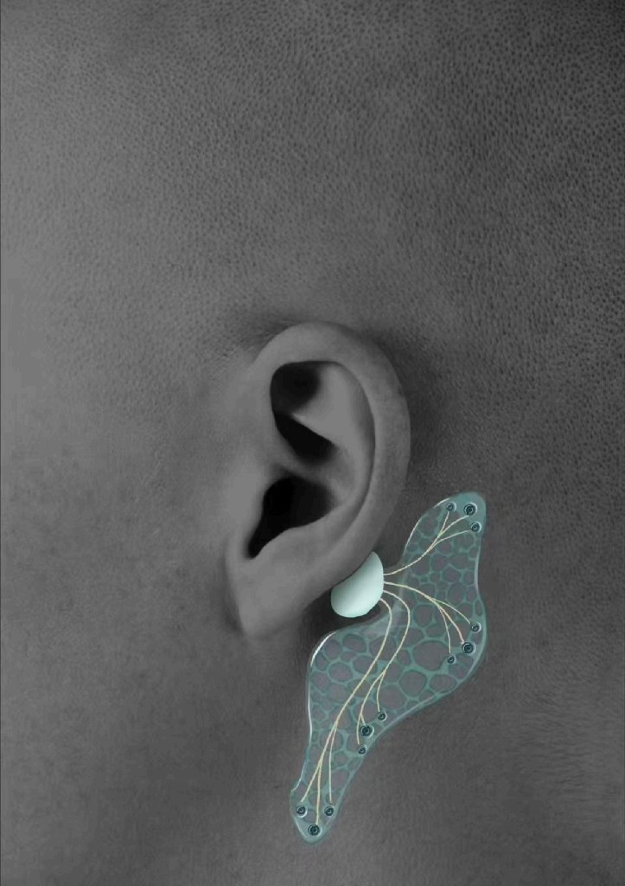
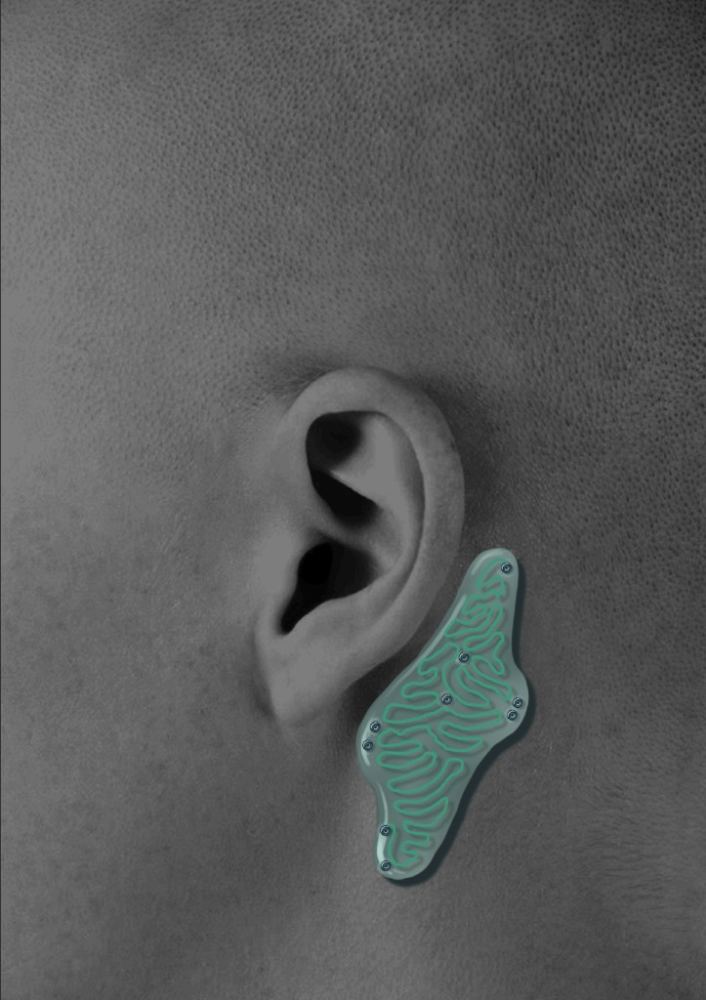

Industrial Product Interface
Symbio-Node™ SN-2040
The Ultimate Link Between Neural Agency and Digital Labor.
Product Brief
Designed at the intersection of biological elegance and tactical logic, the Symbio-Node™ is a high-performance bio-hub engineered for seamless neural intervention. By integrating a flexible hydrogel substrate with an advanced electrode array, it facilitates a new era of agency verification, allowing the body to transcend its physical limitations through AI-driven proxy control.

Inspiration: Slime Molds
Concept: The organic architecture of SN-2040 pays direct homage to slime molds. In nature, these
single-celled organisms solve complex spatial problems through decentralized networks, growing only where
they are most efficient.
Our wearable device mimics this biological logic. The symbiotic array does not impose a rigid structure on
the body; instead, it “grows” on the skin behind the ear.



Prototype Narrative
Diegetic Prototype
During the computational modeling phase, we utilized Grasshopper (Rhino) to simulate a tubular network system inspired by slime mold growth patterns. This algorithmic approach allowed us to emulate the organic efficiency of biological systems, resulting in an optimized morphology that captures the 'ideal state' of our product's form.
In the final production phase, we created prototypes using materials such as acrylic paint, electrical wire, transparent modeling clay, and ultra-light clay.
Operational Note
Operational Protocol & Safety
Exemption Clause: Participation in the Renting Cloud AI program via the Synaptic Proxy constitutes a full waiver of physical liability. During active Proxy Mode, the host remains exempt from collisions or damages, as bodily agency is temporarily surrendered to the AI controller.
Warning: Frequent transition between Free Will and Proxy Control may result in mild neurological agnosia or memory fragmentation. Ensure stable carotid attachment for consistent signal integrity.